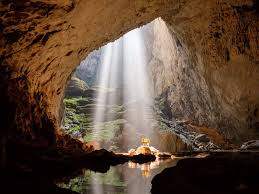
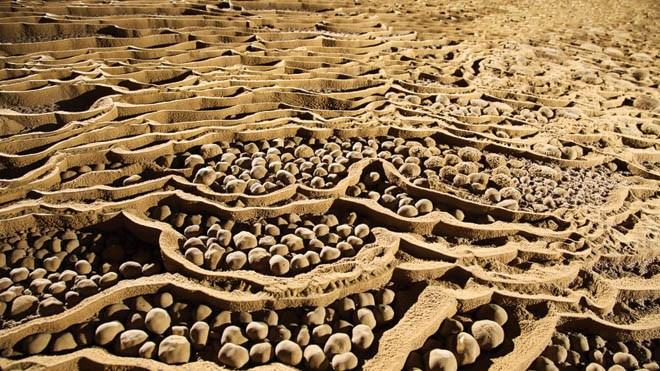
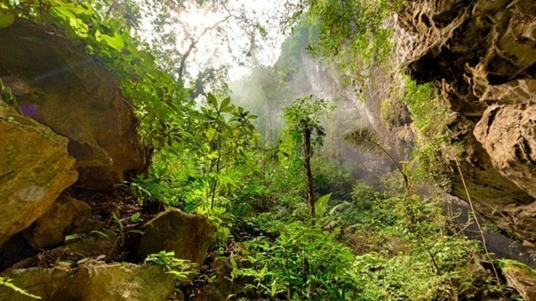

Hang Sơn Đoòng nằm trong vùng lõi của Vường quốc gia Phong Nha - Kẻ Bàng, tỉnh Quảng Bình là một hang động mới được Hiệp hội nghiên cứu hang động Hoàng gia Anh khám phá và công bố là hang động lớn nhất thế giới trong năm 2009 – 2010 và được đưa vào khai thác theo hình thức du lịch khám phá mạo hiểm từ năm 2013.
Với cách khai thác hạn chế số lượng người tham gia, số lượng người chinh phục thành công Hang Sơn Đòng hiện tại thậm chí còn ít hơn rất nhiều so với số lượng người đã từng đứng trên đỉnh Everest. Hãy tham gia vào chuyến chinh phục Hang Sơn Đoòng và trở thành một trong những người may mắn trải nghiệm một trong những kỳ quan có một không hai trên thế giới.
Hãy tưởng tượng chuyến tham quan bằng việc trekking vào sâu trong hang động lớn nhất thế giới sẽ là chuyến thám hiểm thật sự không giống bất cứ chuyến tham quan nào khác. Bên trong một hang động có thể chứa được chiếc Boeing 747 – đây thực sự là một khung cảnh ngoài sức tưởng tượng với những khối thạch nhũ, măng đá khổng lồ treo trên trần hang động hoặc mọc lên từ mặt đất, nhìn từ xa trông giống như những sinh vật ngoài hành tinh với những hình thù kỳ lạ. Có cả một khu rừng nguyên sinh ở trong hang động – có lẽ bạn sẽ không tin rằng đó là sự thật cho đến khi bạn thật sự nhìn thấy nó ở trong Hang Sơn Đoòng! Sương mù luôn hiện diện và phủ kín khu vực này, do đó ở đây có điều kiện thời tiết khí hậu riêng, tách biệt hẳn so với khí hậu bên ngoài. Bạn có thể tìm thấy những hành lang hoá thạch xuất hiện ở đây, minh chứng cho sự sống tồn tại trong hang động cách đây hàng triệu năm.
Khi tiếp cận cửa hang Sơn Đoòng, từng luồng gió mát lạnh thổi từ trong hang sẽ xua tan hết mọi mệt mỏi sau một khoảng thời gian băng rừng lội suối vất vả. Sương mù mờ ảo, gió lạnh phảng phất tạo nên cảm giác phấn khích lạ thường – dường như có những thứ bí ẩn kỳ diệu vượt ngoài sức tưởng tượng đang chờ bạn khám phá ở phía trước.
|  |
HANG SƠN ĐOÒNG ĐƯỢC PHÁT HIỆN NHƯ THẾ NÀO? Từ khi còn là thiếu niên, Hồ Khanh đã trở thành một trong những sơn tràng như cách gọi của người địa phương trong vùng, thường trải qua những chuyến đi nhiều tuần vào sâu trong những khu rừng của Vườn quốc gia Phong Nha – Kẻ Bàng để bẫy thú rừng và khai thác gỗ với thu nhập rất ít ỏi. Vào năm 1990, trong một chuyến đi vào rừng như thường lệ, Hồ Khanh vô tình phát hiện một cửa hang nhỏ lấp ló sau vách núi đá. Khi đến gần, Hồ Khanh thấy những đám sương mù dày đặc thổi ra từ cửa hang nhỏ và từ đó có thể nghe thấy âm thanh của một dòng suối chảy xiết từ trong hang vọng trở ra. Khi cảm nhận được luồng gió lạnh từ trong hang thổi ra, Hồ Khanh quyết định quay trở lại mà không kiểm tra gì thêm. Sau khi trở về nhà, Hồ Khanh quên mất vị trí chính xác của cửa hang và hoàn toàn không quan tâm gì thêm vì cho rằng nó cũng như là một trong rất nhiều cái hang bình thường khác mà anh vẫn hay nhìn thấy trong mỗi chuyến đi rừng của mình. Tại thời điểm này, Howard Limbert và Deb – hai thành viên của Hiệp hội hang động Hoàng gia Anh (BCRA) – đang ở Phong Nha và tiến hành các cuộc tìm kiếm, khảo sát hang động trong vùng. Một lần trò chuyện với Howard, Hồ Khanh tình cờ nhắc đến cửa hang mà ông vô tình nhìn thấy với những luồng gió mạnh, sương mù dày đặc cùng với những âm thanh vọng ra từ trong hang. Howard và Deb rất phấn khích và thúc giục Hồ Khanh tiến hành nhiều cuộc tìm kiếm hang động này. Sau nhiều lần cố gắng tìm kiếm nhưng thất bại, mọi người đều nghĩ rằng sẽ chẳng bao giờ tìm thấy cửa hang bí ẩn này và đinh ninh rằng nó chẳng bao giờ tồn tại trên đời. Mọi chuyện tưởng chùng kết thúc tuy nhiên Hồ Khanh vẫn âm thâm tìm kiếm cửa hang bí ẩn trong nhiều năm sau đó. Vào năm 2008, trong một chuyến đi săn khác Hồ Khanh may mắn tìm lại dược vị trí cửa hang tưởng chừng đã bị lãng quên. Ông cẩn trọng ghi lại đường đi trong đầu và tìm cách liên lạc với Howard. Đến năm 2009, Hồ Khanh dẫn Howard, Deb và một số chuyên gia hang động khác quay lại cửa hang, mở đầu cho những chuyến khảo sát kỹ hơn sau này. Những gì công bố sau đó về hang động mới được đặt tên là Hang Sơn Đoòng trở nên nổi tiếng và được cả thế giới biết đến là hang động lớn nhất thế giới. |
|  |
ĐỊA CHẤT Các cột nhũ đá vôi tại hang Sơn Đoòng có thể cao lên đến 80m. Có những chỗ chuông đá quần tụ tạo thành những khối thạch nhũ đồ sộ. Những quần thể độc đáo này thường được những nhà thám hiểm trong hiệp hội Hang động Hoàng gia Anh đặt cho những cái tên rất thú vị. Ngoài những kỉ lục “lớn nhất, rất lớn”, trong hang Sơn Đoòng còn có những thực thể, hay đúng ra là những thành tạo địa chất rất nhỏ, rất mỏng manh và dễ bị phá hủy. Ví dụ những viên đá thường được gọi là ngọc động, thực chất là những thạch nhũ hình thành bởi cacbonat canxi kết tủa xung quanh những nhân kết tinh. Và những nhân kết tinh đó, trong quá trình thành tạo lại được dòng nước chảy qua, cuối cùng là vừa kết tủa vừa lớn lên, xoay tròn, tạo thành những viên giống như hòn bi hay quả trứng…nói chung là có cấu tạo đồng tâm. Cả hàng triệu viên, nằm trong những ngăn, mà những ngăn này cũng làm bằng chất cacbonat canxi, tức là chất đá vôi. Những ngăn đó rất là mỏng mảnh, nhưng cũng tạo thành hàng vạn, hàng triệu ngăn như vậy, từ đó tạo nên cả một thế giới của những viên ngọc động trong hang Sơn Đoòng, nhiều tới mức khó thể biết là bao nhiêu. Hoặc những thành tạo được gọi là phytokarst hay biokarst, cũng là những thành tạo do đá vôi hình thành nên, nhưng dưới tác dụng của những loại sinh vật như nấm, tảo cần ánh sáng để quang hợp., Các sinh vật này tiết ra một thứ axit có tác dụng ăn mòn đá vôi, nhưng đó là ăn mòn sâu theo hướng đối diện với tia sáng. Nơi nào tia sáng chiếu vào thì nó khoét sâu theo hướng sáng đó, cuối cùng tạo thành những cấu tạo như những bó que. Rất nhiều bó que chĩa thẳng về phía ánh sáng, tạo nên một thứ mà các hệ sinh thái thông thường rất hiếm gặp. Ở Việt Nam chưa tìm thấy phytokarst ở nơi nào khác. |
|  |
HỆ SINH THÁI ĐA DẠNG Tại những nơi vách núi đá vôi chưa được hình thành chắc chắn, trần của hang động sụp xuống tạo thành những hố sụp cho Sơn Đoòng, tạo điều kiện cho oxy vào trong hang động và ánh nắng chiếu vào. Đó chính là khoảng khắc mà sự sống và sức sống thật sự được đâm chồi sinh sôi nảy nở trong đường hầm khổng lồ này Sơn Đoòng sở hữu cho riêng mình: Khu rừng nhiệt đới Edam với thảm thực vật độc đáo; thác nước; sông ngầm; các hiện tượng thời tiết mây, sương mù, thậm chí “mưa”. Chỉ riêng năm 2013 đã có 7 loài động thực vật mới được tìm ra và rất nhiều loài chưa được ghi nhận chính thức. Trong hang có những loại sinh vật rất nhỏ, sống trong bóng tối triền miên, những chỗ không hề có ánh sáng vào bao giờ. Nhưng dưới ánh sáng đèn pin hay ánh sáng dưới mũ những người đi thám hiểm hang động, có thể nhìn thấy những con vật thuộc bộ không cánh hoặc phụ ngành nhiều chân – lớp chân khớp chẳng hạn – bò trên mặt đất. Đất ấy chắc chắn có mùn, và mùn đó là do dòng nước có thể chảy qua, mang từ những nơi khác đến, đưa vào trong hang động. Chính vì có một chút thức ăn gì đó, mà những con vật này có thể sống được trong bóng tối. Các động vật mới phát hiện bao gồm: một loài cá, một loài nhện và một loài sâu cuốn chiếu chưa từng được ghi nhận. Mẫu vật của những loài này đã được gửi đi phân tích và sẽ được đặt tên để công bố trong thời gian tới. |